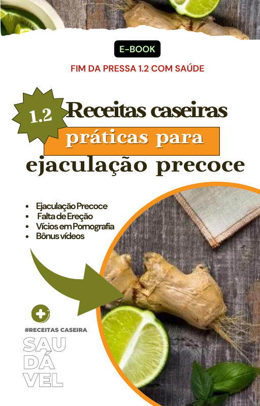

Bônus Exclusivos
Adquira agora o ebook e receba esses bônus incríveis para transformar sua vida sexual!
.png)
"A Arte de Satisfazer uma Mulher"
Este bônus foi desenvolvido para ajudá-lo a entender as necessidades e desejos femininos, proporcionando uma conexão mais íntima e prazerosa. Aqui estão os principais tópicos abordados:
- Compreensão dos Pontos de Prazer Feminino: Conheça as zonas erógenas mais sensíveis e como estimulá-las de maneira eficaz.
- Comunicação e Conexão Emocional: Aprenda a se comunicar de forma aberta e sincera com sua parceira.
- Técnicas de Preliminares: Descubra como as preliminares podem transformar a experiência sexual.
- Posições Sexuais que Maximizam o Prazer Feminino: Explore posições que estimulam os pontos certos.
- Como Prolongar a Relação: Técnicas para manter o controle e prolongar o ato sexual.
- Dicas para um Aftercare Memorável: Aprenda a cuidar da sua parceira após o ato sexual.

Exercícios para Fortalecimento do Músculo Pubococcígeo
Este bônus foi desenvolvido para ajudá-lo a fortalecer o músculo pubococcígeo, melhorando o controle ejaculatório e a saúde sexual. Aqui estão os principais tópicos abordados:
- O Que é o Músculo Pubococcígeo e Por Que Ele é Importante: Entenda a função desse músculo e sua relação com o controle ejaculatório.
- Exercícios Básicos para Iniciantes: Aprenda exercícios simples para começar a fortalecer o músculo PC.
- Técnicas Avançadas para Fortalecimento: Exercícios mais intensos para aumentar a força e a resistência.
- Rotinas de Treino Diário: Planos de treino detalhados para incorporar na sua rotina.
- Benefícios Adicionais dos Exercícios PC: Melhora na qualidade das ereções e aumento da sensibilidade.
- Dicas para Maximizar os Resultados: Como combinar os exercícios com hábitos saudáveis.

Receitas Caseiras para Melhorar a Saúde Sexual
Descubra alimentos e suplementos naturais que ajudam a melhorar a saúde sexual.
- Aumento da resistência sexual: Ingredientes naturais que ajudam a prolongar o tempo de relação.
- Melhora da circulação sanguínea: Alimentos que estimulam o fluxo sanguíneo para a região íntima, garantindo mais vigor e controle.
- Redução da ansiedade: Receitas que ajudam a acalmar a mente e reduzir o estresse, um dos principais fatores da ejaculação precoce.
- Fortalecimento do organismo: Nutrientes essenciais para aumentar a energia e a disposição.